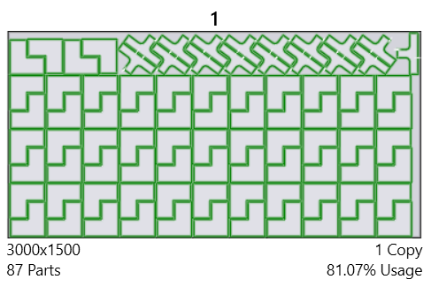
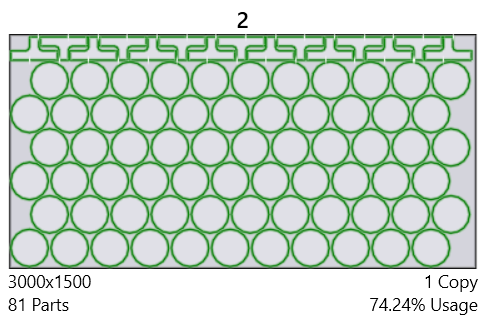
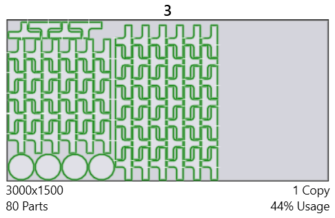
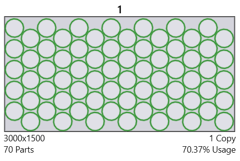
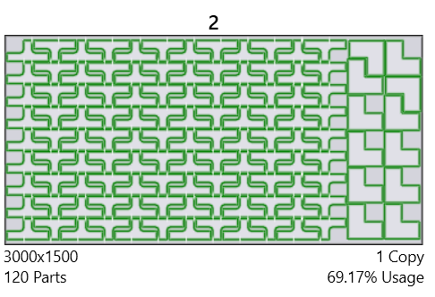
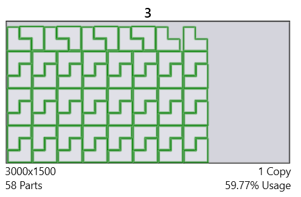

Nesting
Layouts
TecZone Laser has a powerful nesting engine which places your parts in the most efficient way on a sheet.
Spread-out parts on a nested layout if there is no remainder sheet
TecZone Laser’s nesting engine automatically spreads-out parts on fully filled sheetsIt analyses the layout and checks if spreading out will make a meaningful difference to part spacing and if it does, it will spread out the partsThis automatically improves sheet stability.
Option to prefer placing thin long parts across slats rather than along slats
It is great if the nesting engine is aware of laser processing implications when it is positioning a part. TecZone Laser’s homegrown nesting engine is aware of the slat configuration and automatically chooses prefers across the slat orientations for some parts (possibly at the cost of nesting efficiency).
These options also can be set in Settings → Cut CAM → Nesting.
Nesting with taking grain direction (rolling direction) into account
User can specify the preferred material grain on the part and TecZone Laser will ensure that the part is placed in the right orientation on the blank sheet, taking the blank sheet’s rolling direction into account.
Nesting based on priority of parts
TecZone Laser can nest parts based on their priority. Parts with lower priority number are preferably nested before parts with higher priority number. The exception to this rule is when parts have 0 as priority number. Such parts have least priority.
  
  
Automatic TwinLine Nesting
TecZone Laser nesting engine can generate good automatic twinline nest results, taking into considerations various twinline related sensitivities.
Consistent space between edges: When creating nesting cells (patterns that are repeated) the software ensures that the distance between part edges is either exactly equal to kerf width or the usual part gap.
Well aligned twinline edges: In the previous implementation, the twinlined edges were not overlapping completely, creating tiny, unmachinable nooks as shown in the snapshot belowThis should not happen now.
No tiny twinline segments: The software will never create tiny twinline segments shorter than 10mm.
Nesting a partly filled sheet
TecZone Laser can nest on a sheet partly filled. It can come in handy when a user wants to manually nest a portion of the layout and then want the software to automatically fill the rest of the sheet.
Nesting on non-rectangular sheets or sheets with holes
TecZone Laser can automatically nest on a non-rectangular remainder sheet.
Sequencing & Routing optimization
Sequencing and routing optimization is much improved over previous CAM systems.
-
Sequence within a part is optimized much better with the goal to minimize head repositioning time.
-
Multiple sequences are computed for each part, each optimized for different scenarios on the layout. Depending on where the machine head is coming from and where it needs to go next, the order within a part could vary across instances of the same part.
Moving around cut holes (instead of raising head).
Sometimes, it is faster to quickly go around an obstructing hole with head down rather than lifting the head up. TecZone Laser can do that when it saves time and it is safe. For safety reasons, when routing around a hole that could have a tilted cutout, it applies greater margin, otherwise a smaller standard margin. Thus, TecZone Laser’s tipping analysis helps in optimizing routing and reduces processing time on the machine.
Instant reading of head repositioning time to gauge effect of manual sequence and routing changes.
The total time spent for head repositioning is a good metric to measure the quality of sequence and routing optimization. TecZone Laser calculates this time accurately and instantly.This helps the user gauge the impact of her changes to the sequence.
Automatic adding of microjoint to a hole if another part is nested in it (on layout)
A big hole inside a part could be evaluated as being stable at the part level. But on a layout, when other smaller parts are nested in this hole, it could become unstable. TecZone Laser can detect such situations and automatically add a microjoint. This is done dynamically even while the user is manually modifying the layout.